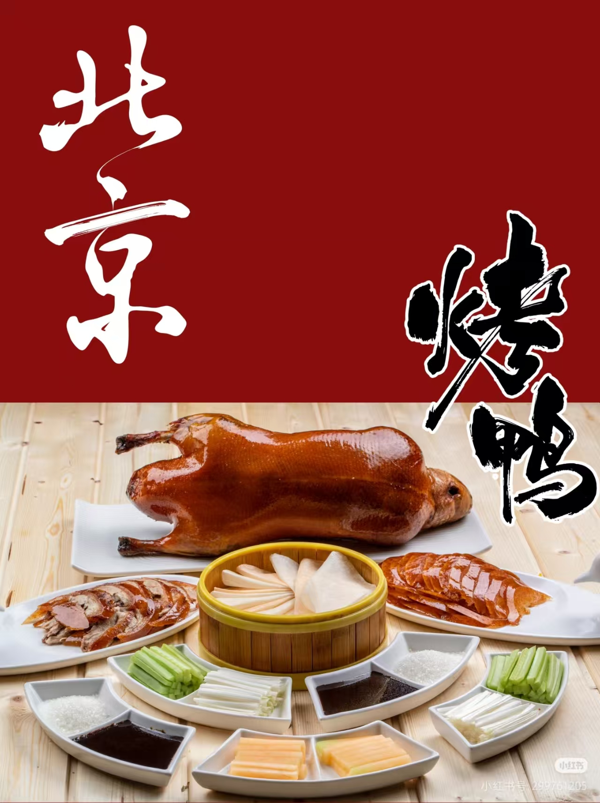

全聚德烤鸭

郫县豆瓣
沙县小吃
南京盐水鸭

嘉兴粽子

云南过桥米线
人间烟火气，最抚凡人心。中华美食不止是味蕾上的美味，更是流淌千年的非物质文化遗产。一粥一饭藏匠心，一菜一味有传承，从精工细作的百年老店，到烟火寻常的市井小吃，每一道风味都承载着地域风情、民俗故事与匠人坚守，让传统味道在时光里代代相传。
中华非遗美食技艺承载着数千年饮食文明发展脉络，历经朝代更迭、民俗演变与地域融合，沉淀了古人的饮食智慧与生活理念。各类美食制作技艺依靠师徒口传心授、家族世代沿袭，保留了古代饮食礼制、节庆宴饮、祭祀祈福等传统习俗。
非遗美食不仅注重口味调配，更讲究造型雕琢、色彩搭配与器皿映衬。从食材处理、刀工雕刻到火候把控、摆盘呈现，都蕴含着中式美学理念，兼具手工技艺之美、造型艺术之美与地域风情之美。
非遗美食是地域文化的鲜明名片，能够直观反映一方水土的物产特色、气候特征与人文性格。美食技艺的传承与发展，带动地方文旅产业、特色餐饮与手工行业发展，增强地域文化认同感与群众文化自信。
在现代化快餐文化冲击下，许多传统美食技艺面临失传困境。保护和传承非遗美食技艺，不仅是留住手工匠心与传统味道，更是延续民族文化根脉、守护非物质文化遗产的重要举措。

| 序号 | 非遗美食名称 | 所属地区 | 非遗类别 |
|---|